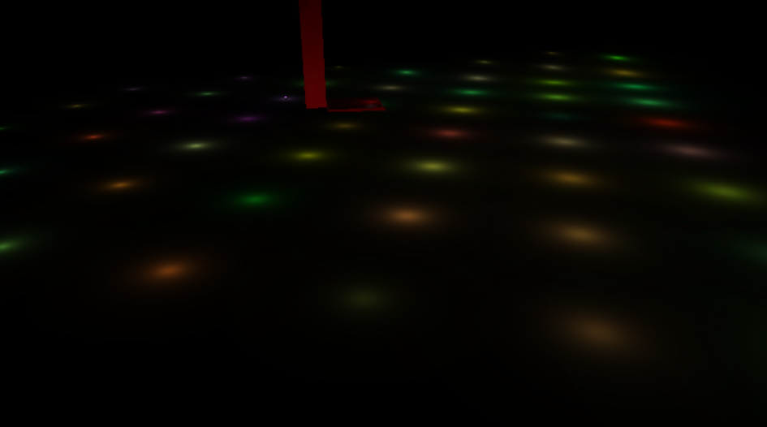
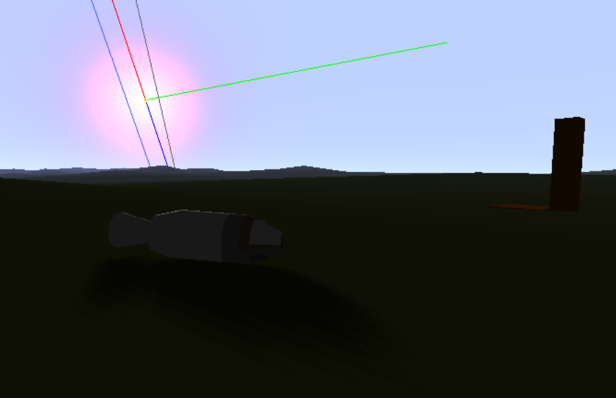

Since the last blogpost OSPGL has received quite a lot of changes, the repo has received almost 80 commits! (Some of them are relatively small though).
Here are the new features, sorted by time of introduction (But changes have happened uniformly through time to almost all these features):
Vehicles in the World
Getting vehicles to work nicely with the planet renderer was difficult, mostly because of the physics simulation. To get collision to work, a custom bullet3 collider was neccesary. The task ended up being relatively simple, but took more time than expected. Bullet3 documentation is a bit lacking, and some code changes had to be done in bullet3's source code, as it was never designed to work with planetary sized objects moving at high speeds. Nevertheless, it ended up working perfectly! There are still some issues with the code that generates surface colliders. For example, "physical" tiles need to be the same size as "graphical" tiles, something which will be fixed later on.
CMake building
Previously building the project was basically impossible for anybody but me, but, after awesome contributions from Capital-Asterisk and Titaniumtown, and help from jonesmz, the project is now compiled using CMake. This change does not only mean that building is easier, it also makes the game as easy to build on Linux (and MacOS) as on Windows!
Deferred Rendering
Deferred rendering is a technique which allows an almost arbitrary amount of lights to be drawn without a big perfomance penalty. This technique works by first rendering every object to a texture, where fragment information is stored. Afterwards, lights will read these textures and apply lighting. In forward rendering (the traditional method which was used before this renderer was written), all objects have to process every single light in the scene. This means that many unseen fragments have to do the expensive lighting calculations.
Perfomance is very sensitive to light size and position (the bigger and closer the light the more pixels it hits), but, with properly configured lights good framerates can be achieved. Here are 100 lights (seen from far away) running at around 40FPS on my Intel 530 HD GPU:

We use a technique called light volumes. It consists on drawing a mesh that approximates the shape of the light (a sphere for a point light, a cone for a spot light, fullscreen quad for sunlight...) and applying the light shader to that mesh. The result is that only pixels which are hit by the light have to do the expensive computations. Other techniques exists, such as tiled deferred shading, which allow an even higher number of lights. For now this is good enough, most lights are gonna be relatively small.
A very basic shadow casting system has also been implemented, but it still requires a lot of work. Rendering shadows on a game like OSP is a really difficult topic, where traditional techniques don't work "out of the box". Cascaded shadow maps could be used for near to medium distance shadows, but landscape shadows are probably going to need an special method, otherwise we could run into precision issues. The final renderer will include planetary scale shadows, including eclipses.
Lua Machines, Links and Vehicle Serialization
First of all, links are now implemented in lua, allowing any kind of behaviour to happen. For now, only a single link type has been implemented.
Also, vehicles can be loaded from a TOML file.
Here is the current implementation of two machines, a capsule and an engine, to showcase the wiring system explained below. (Code has been simplified for brevity)
-- core:machines/capsule.lua
require("vehicle")
local logger = require("logger")
local toml = require("toml")
function define_ports()
machine:add_output_port("Throttle", "number")
end
function update(dt)
machine:write_to_port("Throttle", 1.0)
end
-- core:machines/engine.lua
require("vehicle")
local bullet = require("bullet")
local glm = require("glm")
local toml = require("toml")
local thrust = machine.init_toml:get_number("thrust")
local nozzle = machine.init_toml:get_string("nozzle")
local throttle = 0.0
local nozzle_dir = nil
local nozzle_pos = nil
function set_throttle(port, value)
throttle = math.max(math.min(value, 1.0), 0.0)
end
function define_ports()
machine:add_input_port("Throttle", "number", set_throttle)
end
function update(dt)
local f_thrust = thrust * throttle
if nozzle_dir == nil then
nozzle_dir = part:get_piece("p_root"):get_marker_forward(nozzle)
nozzle_pos = part:get_piece("p_root"):get_marker_position(nozzle)
end
if f_thrust > 0 then
local p_root = part:get_piece("p_root")
-- Direction is on world coordinates
local rdir = -p_root:transform_axis(nozzle_dir)
-- Position is relative to the center of mass of the rigidbody
local rpos = p_root:transform_point_to_rigidbody(nozzle_pos)
p_root.rigid_body:apply_force(rdir * thrust * throttle, rpos)
end
end
As you can see, the capsule simply writes a value to a port. This port can be connected (wired) by the user to anything, for example, to the engine.
The engine code is a bit more complex as it also showcases loading settings from the TOML configuration. thrust is a number value while
nozzle is the name of a marker in the 3D model where the nozzle is.
Ports are the most interesting part of all this. They can only be read from the callback functions that the machine sets up in define_ports,
but values can be written to them from anywhere. Once a port has been written to, it is blocked until the next frame. This is done in order to avoid
"write loops" that could freeze the game where a machine, upon receiving a value, writes to a port which causes the machine that sent the first value
to re-send said value, blocking the game.
Buildings
The latest feature, buildings are entities which are fixed to a position in a planet's surface. They are going to be used for launchpads, space centers, easter eggs, and maybe even cities and fixed landmarks. Terrain details (rocks, trees and similar) could also be implemented using buildings, but will most likely use other system to avoid perfomance issues.
That's it for this update. Hopefully next one will actually showcase game features, as the engine is about to become complete enough to start writing the game!
